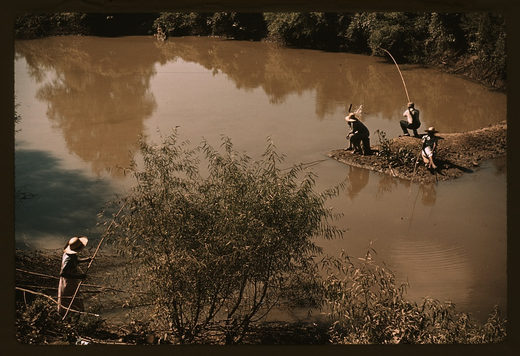
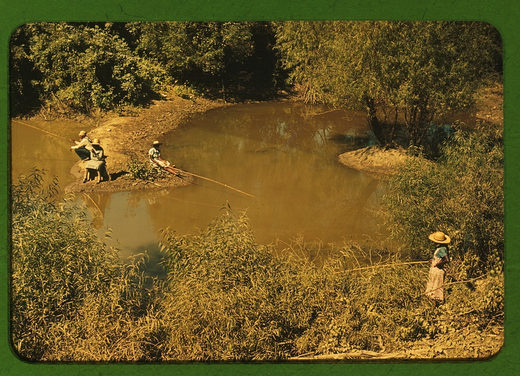

Original
OriginalReference photograph
1024 × 810 pixels · 272,175 bytes
Collection lab / 02 · A controlled experiment
Same photograph.
Different files.
How much work does it take to find them?
Libraries may hold copies, smaller scans and edited versions of the same photograph. Staff need a short list of possible matches to inspect.
Follow one photograph ↓30 real source photographs · 180 files · 4 methods
Precomputed results. No AI runs in this browser.

01 / The problem
Two views of one building are different photographs. In this experiment, a duplicate means a copy or an edit of one original photograph. No file is deleted, moved or overwritten.
02 / What this project does
We downloaded 30 photographs from Library of Congress collections and made five variants of each: an exact copy, a smaller image, a heavily compressed JPEG, a crop removing about 25% of the area, and that crop enlarged again. The original identity gives us the answer for every edited file.
This is real collection photography plus artificially constructed variants. It is a reproducible comparison of existing methods, not a new algorithm, proof of the least possible computation, or a test of every real collection.
Every original and all its edits stay in the same partition. Thresholds are chosen only on calibration data, then frozen before testing. Sources are a convenience sample. See the transformation ledger and identity review.
03 / How it works
SHA-256 summarizes the file's bytes. When hashes agree, we compare the bytes too. Only exactly identical file contents are confirmed. Names and folders do not enter the content hash.
A small fingerprint describes the overall picture. We count differing bits: fewer differences mean closer images. It often handles resizing and compression; crops can change the fingerprint. This is not an AI model.
SSCD turns each image into 512 numbers. We extract them once per file and compare them directly. A high score suggests a candidate; it does not confirm the same photograph.
First verify identical files. Extract one AI feature per exact group, then expand each pair score back to the original files. Cache unchanged features for later runs. All other files still reach AI.
D's final rule is verified identical bytes OR an AI score above the frozen threshold. pHash is shown as separate evidence; it does not decide D's candidates or suppress AI extraction. We never turn a chain of matches into an all-pairs duplicate group.
04 / See an example
The badges compare each variant with its original. “Found” means selected for review at the frozen threshold. “Missed” means a known edit was not selected.
Original1024 × 810 pixels · 272,175 bytes
 Exact copy
Exact copy1024 × 810 pixels · 272,175 bytes
 Smaller (40%)
Smaller (40%)410 × 324 pixels · 29,672 bytes
1024 × 810 pixels · 46,293 bytes
Crop (~25% removed)887 × 701 pixels · 151,319 bytes
 Crop, enlarged again
Crop, enlarged again1024 × 810 pixels · 190,041 bytes
Photograph: Gateway Arch, or Gateway to the West, the centerpiece of the Jefferson National Expansion Memorial, St. Louis, Missouri Source record · Rights.
Thumbnails are generated from the measured files for display; methods ran on the full experiment files. See thumbnail-to-file checksums. Historical catalog titles are retained in the source records.
05 / Measured results
Experiment evaluation mode: original identities are known here. For unknown images, the tool outputs candidates for human review, without “correct” or “wrong” labels.
All four methods see the same 108 held-out files and all 5,778 unordered file pairs. Precision is the share of selected pairs that are true duplicates; recall is the share of true duplicate pairs found.
| Method | Precision | Recall | TP | FP | FN | Candidates |
|---|---|---|---|---|---|---|
| A · File hash | 100.0% | 6.7% | 18 | 0 | 252 | 18 |
| B · Perceptual hash | 71.0% | 85.2% | 230 | 94 | 40 | 324 |
| C · AI features | 100.0% | 99.3% | 268 | 0 | 2 | 268 |
| D · Reuse + AI | 100.0% | 99.3% | 268 | 0 | 2 | 268 |
TP = correctly selected duplicates; FP = selected different photographs; FN = missed duplicates. No Top-k retrieval metric is mixed into these threshold results. Frozen cutoffs: pHash distance ≤ 20; AI cosine ≥ 0.75. Calibration grid and freeze record.
Original-to-variant pairs only: 18 possible matches per column. This is a smaller, different denominator from the full pair-level table.
| Method | Exact copy | Smaller (40%) | JPEG quality 18 | Crop (~25% removed) | Crop, enlarged again |
|---|---|---|---|---|---|
| A · File hash | 18 / 18 | 0 / 18 | 0 / 18 | 0 / 18 | 0 / 18 |
| B · Perceptual hash | 18 / 18 | 18 / 18 | 18 / 18 | 13 / 18 | 13 / 18 |
| C · AI features | 18 / 18 | 18 / 18 | 18 / 18 | 18 / 18 | 18 / 18 |
| D · Reuse + AI | 18 / 18 | 18 / 18 | 18 / 18 | 18 / 18 | 18 / 18 |
Complete fresh-process wall time, including imports, file reading, model loading when needed, feature extraction, comparisons and writing the result. Downloads are preparation work and excluded. Three runs per condition; cells show median [minimum–maximum].
| Method / cache | Wall seconds | CPU seconds | Peak RSS MiB | Files read | AI extractions | Cache hits |
|---|---|---|---|---|---|---|
| A · first | 0.250 [0.210–0.252] | 0.105 [0.104–0.108] | 44.750 [44.750–45.000] | 108 | 0 | 0 |
| A · warm | 0.210 [0.208–0.213] | 0.103 [0.103–0.105] | 45.000 [44.500–45.500] | 108 | 0 | 0 |
| B · first | 2.387 [2.379–2.445] | 1.328 [1.325–1.343] | 98.324 [97.512–98.926] | 108 | 0 | 0 |
| B · warm | 0.445 [0.418–0.446] | 0.268 [0.267–0.274] | 59.000 [58.750–59.000] | 108 | 0 | 108 |
| C · first | 15.773 [15.430–20.591] | 23.385 [22.931–24.628] | 510.375 [500.918–515.383] | 108 | 108 | 0 |
| C · warm | 0.481 [0.473–0.493] | 0.276 [0.275–0.278] | 59.750 [59.750–59.750] | 108 | 0 | 108 |
| D · first | 13.865 [13.513–19.538] | 20.393 [20.271–20.601] | 502.789 [500.941–510.348] | 108 | 90 | 0 |
| D · warm | 0.454 [0.441–0.455] | 0.275 [0.274–0.275] | 59.500 [59.000–59.500] | 108 | 0 | 90 |
C extracted 108 features; D extracted 90, saving 18 model calls (16.7%) by verifying exact copies first. Median first-run wall time was 15.773s for C and 13.865s for D (12.1% lower for D). Both still pay for all file reads and content hashing. Warm runs load cached arrays and do not load the model.
Stages are instrumented inside the worker. The end-to-end wall timer also includes startup and output serialization, so stage sums need not equal the total. Peak RSS covers the whole process, including libraries; memory is not energy.
| Method / cache | Stage | Seconds |
|---|---|---|
| A · first | file_read_s | 0.0554 [0.0497–0.0563] |
| A · first | content_hash_s | 0.0150 [0.0150–0.0151] |
| A · first | cache_read_s | 0.0000 [0.0000–0.0000] |
| A · first | image_library_import_s | 0.0000 [0.0000–0.0000] |
| A · first | model_integrity_s | 0.0000 [0.0000–0.0000] |
| A · first | torch_import_s | 0.0000 [0.0000–0.0000] |
| A · first | model_load_s | 0.0000 [0.0000–0.0000] |
| A · first | decode_s | 0.0000 [0.0000–0.0000] |
| A · first | preprocess_s | 0.0000 [0.0000–0.0000] |
| A · first | feature_extract_s | 0.0000 [0.0000–0.0000] |
| A · first | cache_write_s | 0.0000 [0.0000–0.0000] |
| A · first | compare_s | 0.0014 [0.0014–0.0014] |
| A · first | byte_verify_s | 0.0003 [0.0003–0.0003] |
| A · first | phash_library_import_s | 0.0000 [0.0000–0.0000] |
| A · first | phash_s | 0.0000 [0.0000–0.0000] |
| A · warm | file_read_s | 0.0521 [0.0506–0.0538] |
| A · warm | content_hash_s | 0.0150 [0.0150–0.0150] |
| A · warm | cache_read_s | 0.0000 [0.0000–0.0000] |
| A · warm | image_library_import_s | 0.0000 [0.0000–0.0000] |
| A · warm | model_integrity_s | 0.0000 [0.0000–0.0000] |
| A · warm | torch_import_s | 0.0000 [0.0000–0.0000] |
| A · warm | model_load_s | 0.0000 [0.0000–0.0000] |
| A · warm | decode_s | 0.0000 [0.0000–0.0000] |
| A · warm | preprocess_s | 0.0000 [0.0000–0.0000] |
| A · warm | feature_extract_s | 0.0000 [0.0000–0.0000] |
| A · warm | cache_write_s | 0.0000 [0.0000–0.0000] |
| A · warm | compare_s | 0.0014 [0.0014–0.0014] |
| A · warm | byte_verify_s | 0.0003 [0.0003–0.0003] |
| A · warm | phash_library_import_s | 0.0000 [0.0000–0.0000] |
| A · warm | phash_s | 0.0000 [0.0000–0.0000] |
| B · first | file_read_s | 0.0519 [0.0513–0.0544] |
| B · first | content_hash_s | 0.0149 [0.0149–0.0150] |
| B · first | cache_read_s | 0.1463 [0.1289–0.1478] |
| B · first | image_library_import_s | 0.0192 [0.0176–0.0210] |
| B · first | model_integrity_s | 0.0000 [0.0000–0.0000] |
| B · first | torch_import_s | 0.0000 [0.0000–0.0000] |
| B · first | model_load_s | 0.0000 [0.0000–0.0000] |
| B · first | decode_s | 0.4980 [0.4969–0.5056] |
| B · first | preprocess_s | 0.0000 [0.0000–0.0000] |
| B · first | feature_extract_s | 0.0000 [0.0000–0.0000] |
| B · first | cache_write_s | 0.9119 [0.8987–0.9618] |
| B · first | compare_s | 0.0057 [0.0057–0.0058] |
| B · first | byte_verify_s | 0.0000 [0.0000–0.0000] |
| B · first | phash_library_import_s | 0.0047 [0.0034–0.0065] |
| B · first | phash_s | 0.5729 [0.5105–0.6137] |
| B · warm | file_read_s | 0.0559 [0.0515–0.0559] |
| B · warm | content_hash_s | 0.0149 [0.0149–0.0151] |
| B · warm | cache_read_s | 0.2088 [0.2044–0.2160] |
| B · warm | image_library_import_s | 0.0000 [0.0000–0.0000] |
| B · warm | model_integrity_s | 0.0000 [0.0000–0.0000] |
| B · warm | torch_import_s | 0.0000 [0.0000–0.0000] |
| B · warm | model_load_s | 0.0000 [0.0000–0.0000] |
| B · warm | decode_s | 0.0000 [0.0000–0.0000] |
| B · warm | preprocess_s | 0.0000 [0.0000–0.0000] |
| B · warm | feature_extract_s | 0.0000 [0.0000–0.0000] |
| B · warm | cache_write_s | 0.0000 [0.0000–0.0000] |
| B · warm | compare_s | 0.0066 [0.0063–0.0066] |
| B · warm | byte_verify_s | 0.0000 [0.0000–0.0000] |
| B · warm | phash_library_import_s | 0.0000 [0.0000–0.0000] |
| B · warm | phash_s | 0.0000 [0.0000–0.0000] |
| C · first | file_read_s | 0.0515 [0.0486–0.0540] |
| C · first | content_hash_s | 0.0149 [0.0149–0.0150] |
| C · first | cache_read_s | 0.1442 [0.1255–0.1762] |
| C · first | image_library_import_s | 0.0186 [0.0165–0.0231] |
| C · first | model_integrity_s | 0.1065 [0.1060–0.1075] |
| C · first | torch_import_s | 1.3679 [1.0921–1.6608] |
| C · first | model_load_s | 1.2338 [1.0802–1.5007] |
| C · first | decode_s | 0.4509 [0.4497–0.4556] |
| C · first | preprocess_s | 0.4561 [0.4537–0.4568] |
| C · first | feature_extract_s | 9.9776 [9.8481–10.7132] |
| C · first | cache_write_s | 1.0764 [1.0450–5.7030] |
| C · first | compare_s | 0.0131 [0.0131–0.0133] |
| C · first | byte_verify_s | 0.0000 [0.0000–0.0000] |
| C · first | phash_library_import_s | 0.0000 [0.0000–0.0000] |
| C · first | phash_s | 0.0000 [0.0000–0.0000] |
| C · warm | file_read_s | 0.0555 [0.0519–0.0565] |
| C · warm | content_hash_s | 0.0150 [0.0149–0.0150] |
| C · warm | cache_read_s | 0.2457 [0.2428–0.2610] |
| C · warm | image_library_import_s | 0.0000 [0.0000–0.0000] |
| C · warm | model_integrity_s | 0.0000 [0.0000–0.0000] |
| C · warm | torch_import_s | 0.0000 [0.0000–0.0000] |
| C · warm | model_load_s | 0.0000 [0.0000–0.0000] |
| C · warm | decode_s | 0.0000 [0.0000–0.0000] |
| C · warm | preprocess_s | 0.0000 [0.0000–0.0000] |
| C · warm | feature_extract_s | 0.0000 [0.0000–0.0000] |
| C · warm | cache_write_s | 0.0000 [0.0000–0.0000] |
| C · warm | compare_s | 0.0110 [0.0108–0.0111] |
| C · warm | byte_verify_s | 0.0000 [0.0000–0.0000] |
| C · warm | phash_library_import_s | 0.0000 [0.0000–0.0000] |
| C · warm | phash_s | 0.0000 [0.0000–0.0000] |
| D · first | file_read_s | 0.0553 [0.0518–0.0563] |
| D · first | content_hash_s | 0.0149 [0.0149–0.0149] |
| D · first | cache_read_s | 0.1349 [0.1232–0.1516] |
| D · first | image_library_import_s | 0.0175 [0.0172–0.0237] |
| D · first | model_integrity_s | 0.1065 [0.1065–0.1073] |
| D · first | torch_import_s | 1.1954 [1.1073–1.3524] |
| D · first | model_load_s | 1.0983 [1.0886–1.2701] |
| D · first | decode_s | 0.3622 [0.3565–0.3780] |
| D · first | preprocess_s | 0.3684 [0.3678–0.3696] |
| D · first | feature_extract_s | 8.7407 [8.5927–8.7926] |
| D · first | cache_write_s | 0.8913 [0.8219–7.0101] |
| D · first | compare_s | 0.0117 [0.0115–0.0117] |
| D · first | byte_verify_s | 0.0003 [0.0003–0.0003] |
| D · first | phash_library_import_s | 0.0000 [0.0000–0.0000] |
| D · first | phash_s | 0.0000 [0.0000–0.0000] |
| D · warm | file_read_s | 0.0528 [0.0520–0.0569] |
| D · warm | content_hash_s | 0.0150 [0.0149–0.0151] |
| D · warm | cache_read_s | 0.2206 [0.2123–0.2278] |
| D · warm | image_library_import_s | 0.0000 [0.0000–0.0000] |
| D · warm | model_integrity_s | 0.0000 [0.0000–0.0000] |
| D · warm | torch_import_s | 0.0000 [0.0000–0.0000] |
| D · warm | model_load_s | 0.0000 [0.0000–0.0000] |
| D · warm | decode_s | 0.0000 [0.0000–0.0000] |
| D · warm | preprocess_s | 0.0000 [0.0000–0.0000] |
| D · warm | feature_extract_s | 0.0000 [0.0000–0.0000] |
| D · warm | cache_write_s | 0.0000 [0.0000–0.0000] |
| D · warm | compare_s | 0.0097 [0.0095–0.0098] |
| D · warm | byte_verify_s | 0.0003 [0.0003–0.0004] |
| D · warm | phash_library_import_s | 0.0000 [0.0000–0.0000] |
| D · warm | phash_s | 0.0000 [0.0000–0.0000] |
Starting from the same 108-file test collection, add an exact copy, a resized version, a crop, and two separately sourced independent photographs. Compare empty application cache + full recalculation with reuse of established features.
| Method / cache | Wall seconds | CPU seconds | Peak RSS MiB | Files read | AI extractions | Cache hits |
|---|---|---|---|---|---|---|
| full | 13.979 [13.819–14.894] | 21.370 [21.267–21.599] | 508.242 [506.805–514.785] | 113 | 94 | 0 |
| reuse | 3.819 [3.748–4.163] | 3.193 [3.166–3.212] | 503.004 [501.531–508.953] | 113 | 4 | 90 |
Full recalculation extracted 94 features; incremental reuse extracted 4 and reused 90. The added exact copy reused its verified representative. Median wall time: 13.979s full versus 3.819s incremental. Both ways produced exactly the same scored file pairs in all three runs. This checks cache consistency; it does not establish model accuracy.
All files are read and rehashed on incremental runs to detect changed content. Only missing features are extracted. Cache keys include content identity, model weight hash, preprocessing, dependency versions and algorithm configuration. First/full runs clear the application cache; the OS page cache is not cleared. The shared CPU host can vary. These are neither energy, financial-cost nor FLOP measurements.
06 / What worked—and what still needs review
Exact hashing found all 18 byte-for-byte copies but no edited versions. pHash found 230 of 270 duplicate pairs and selected 94 different-photo pairs. SSCD recovered 38 true pairs pHash missed and missed 0 that pHash found. C and D each found 268/270 with 0 false positives and 2 misses. Every original-to-variant pair was found by AI, but two compressed-to-cropped pairs were missed. That is why pair-level evaluation matters.

A: 0 (not selected) · B: 22 (not selected) · C: 0.8981123 (selected) · D: 0.8981123 (selected)
Same original photograph.
A: 0 (not selected) · B: 26 (not selected) · C: 0.70899916 (not selected) · D: 0.70899916 (not selected)
Same original photograph.
![Crop (~25% removed): [Untitled photo, possibly related to: Greenbelt, Maryland. Handball courts behind the swimming pool]](images/2017832209__crop.jpg)
![Exact copy: [Race between Lincoln Beechey in airplane and Barney Oldfield in automobile, going around race track]](images/2003656135__copy.jpg)
A: 0 (not selected) · B: 20 (selected) · C: 0.01645141 (not selected) · D: 0.01645141 (not selected)
Different source photographs; false positive.
No false positives were observed for A, C or D on this test set. This does not guarantee zero false positives in other collections.


A: 0 (not selected) · B: 32 (not selected) · C: 0.3096382 (not selected) · D: 0.3096382 (not selected)
The creek photographs have different viewpoints, visible banks and fishing poses. They are different exposures, even though they depict the same scene. Source records and full-image inspection support the negative label; similarity alone does not.
Limits: only 30 selected originals, mostly about 1,024 pixels on the long side; controlled edits; no phone rephotography, handwritten marks, severe damage or comprehensive real-catalog identity audit. There is no evidence here for unattended deletion. A librarian still reviews candidates and preserves provenance.
Explore the saved predictions
Filter actual test pairs and inspect their images and scores. These controls only read saved experiment output.
07 / Try it
Use Python 3.13 on Linux for the recorded environment. CPU inference; no training, account, paid vision API or vector database.
git clone https://github.com/meizisong888/LIB_showcase.git
cd LIB_showcase/library_image_duplicates
python3.13 -m venv .venv
source .venv/bin/activate
pip install torch==2.10.0 --index-url https://download.pytorch.org/whl/cpu
pip install -r requirements.txt
python scripts/prepare.py
python scripts/experiment.py --repeats 3
python scripts/build.py --thumbnails
python scripts/check.py
python scripts/evaluate.py --checkThe model and source bytes are downloaded from recorded URLs and checked against saved hashes. A changed source or transformation fails verification. Installation and download times vary; they are not detection times.
python scripts/scan.py /path/to/images --method D --output /path/to/review
# Open /path/to/review/index.html; rerun to reuse cached features.For methods A or B, pass --method A or --method B. AI requires the prepared SSCD weight file. Thresholds from this small test may not fit your collection; inspect candidate pairs and calibrate with separate known examples. The report is written outside the input folder.
All 32 source photographs, rights and downloads
Source manifest
185 files and transformations
Reviewed negative identities
Acquisition record and catalog API limits
External source-link verification limits
Credits: Library of Congress, Prints and Photographs Division; photographers and collections named per item. Rights differ by collection. “No known restrictions” is preserved as the catalog statement, not rewritten as a blanket public-domain claim. Some catalog metadata comes from earlier repository snapshots after the API rate-limited new requests; actual image download dates and checksums are recorded separately.
AI: SSCD disc mixup · ResNet50 · official TorchScript. Code commit 95902662f2217a5f4aa45f2a3fc70a01dfd3b66a identifies the documentation/code snapshot; the separate weight checksum identifies the binary. Model input is an RGB 320 × 320 direct resize, ImageNet mean/std normalization, no crop. No fine-tuning, whitening, score normalization or geometric verification.